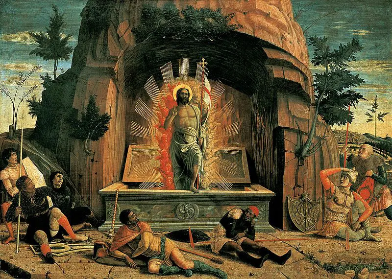
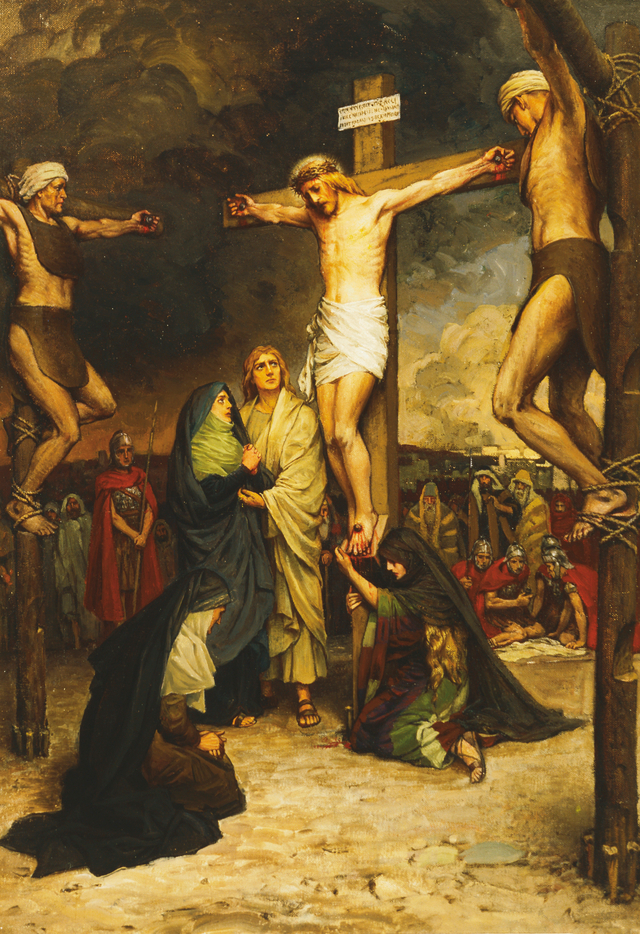
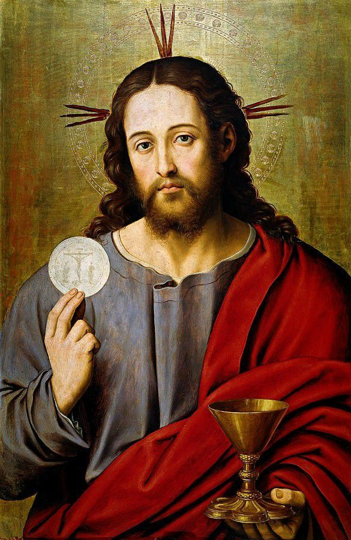
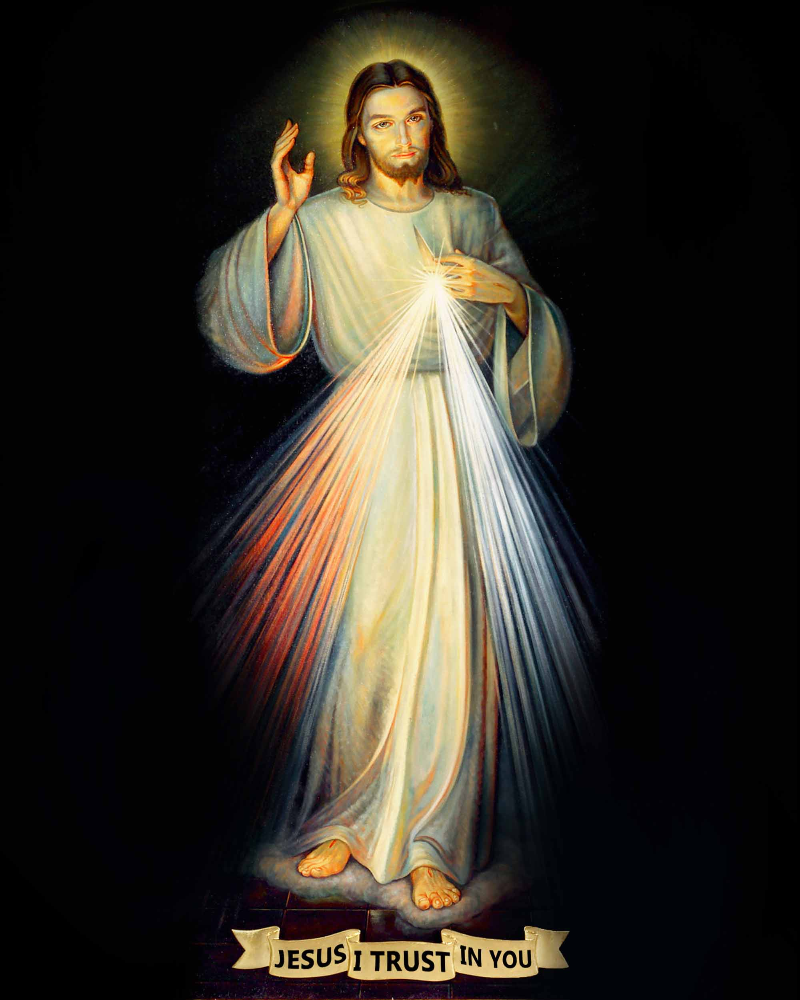
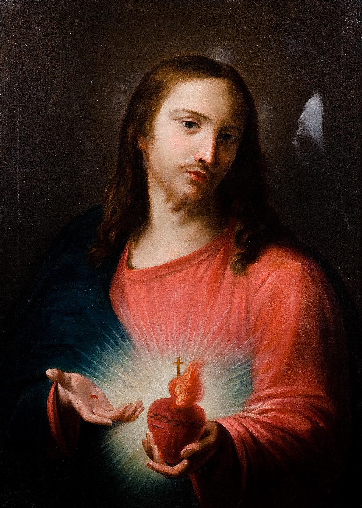

Make a joyful noise and praise the Lord our God eternal and victorious! Blessed be they who call upon the name of Christ, for their faith is strong.

Icons for Veneration

"So they took Jesus, and carrying the cross Himself He went out to what is called the Place of the Skull, in Hebrew, Golgatha. There they cruficied Him, and with Him two others, one on either side, with Jesus in the middle." - John 19:16-18

"Whoever eats My flesh and drinks My blood has eternal life, and I will raise him on the last day. For My flesh is true food, and my blood is true drink." - John 6:54-55

"I promise that the soul that will venerate this Image will not perish. I also promise victory over its enemies already here on earth, especially at the hour of death. I Myself will defend it as My own glory." - Jesus to St. Faustina

"My love reigns in suffering, it triumphs in humility and enjoys itself in unity." - Jesus to St. Margaret Mary
For God so loved the world, as to give His only begotten Son; that whosoever believeth in Him, may not perish, but may have life everlasting. For God sent not His Son into the world, to judge the world, but that the world may be saved by Him.
-St. John 3:16-17
Call to action! It's Time!
Become baptised in the name of the Father, and of the Son, and of the Holy Spirit!